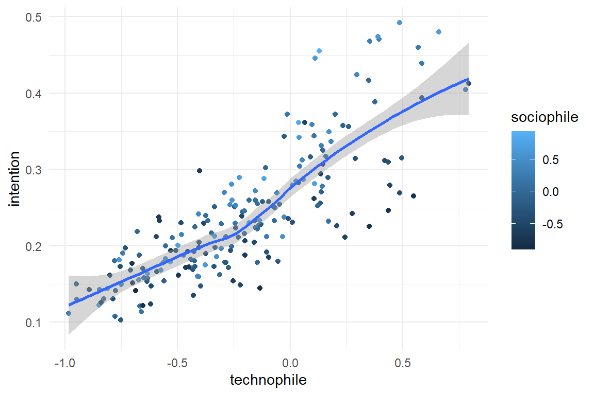
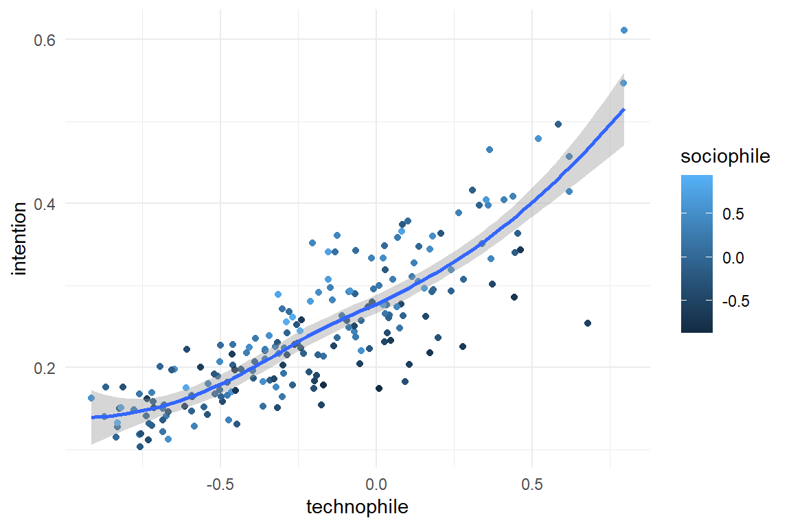
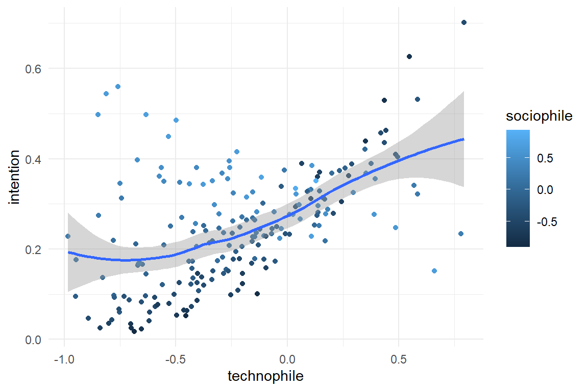
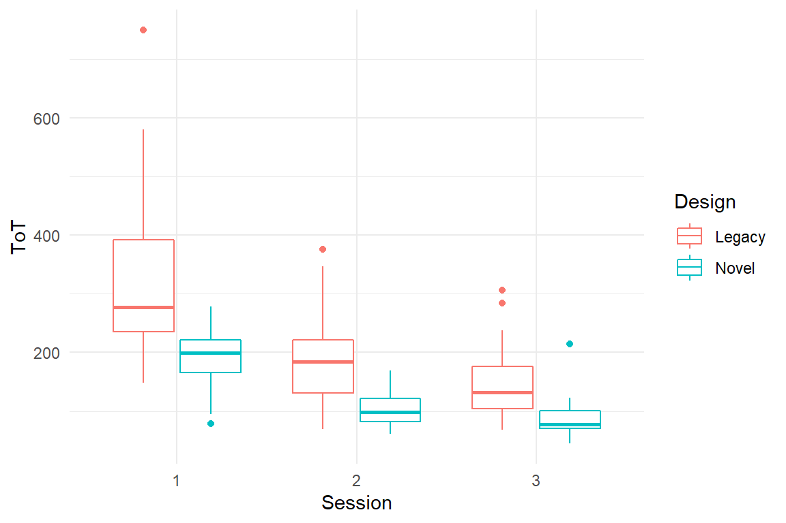
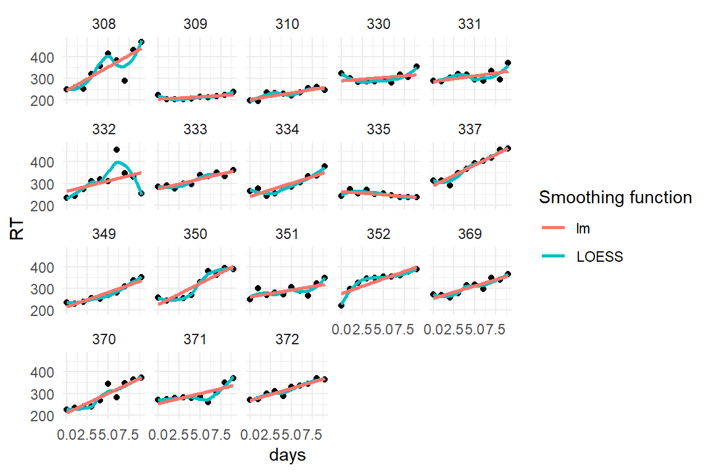
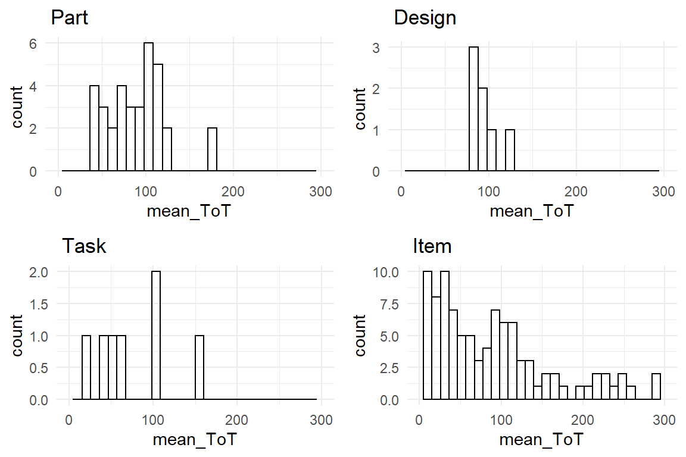
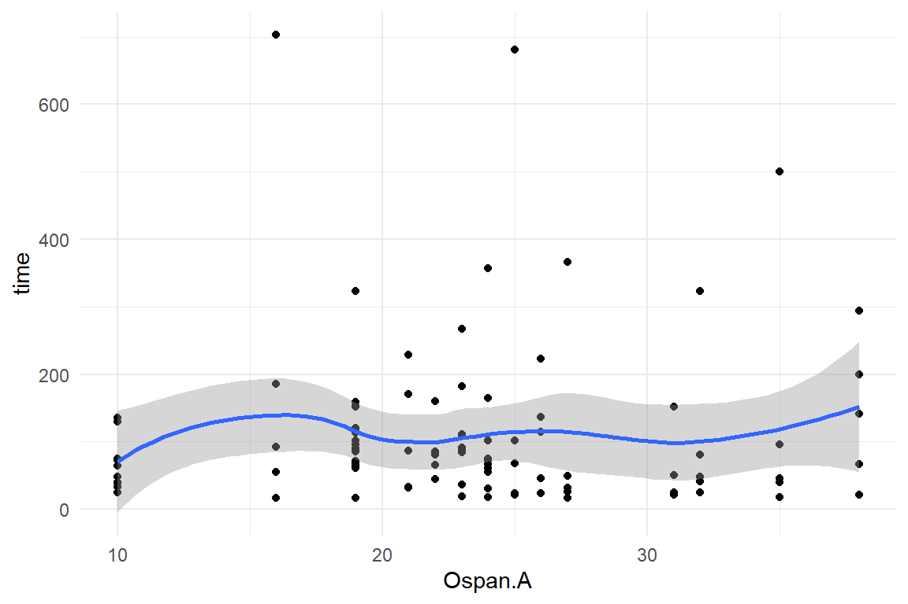
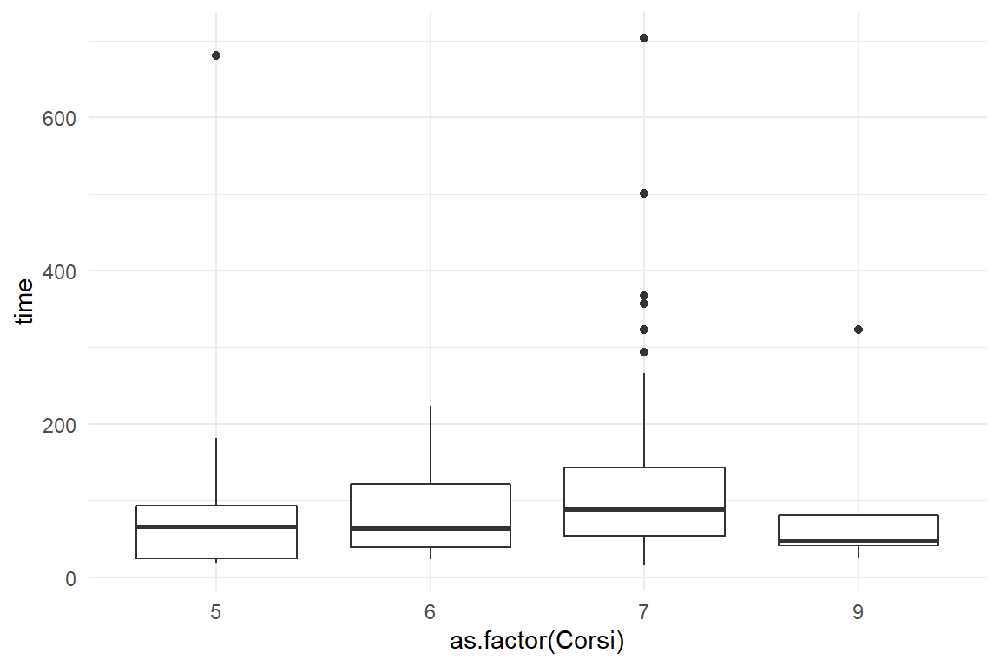
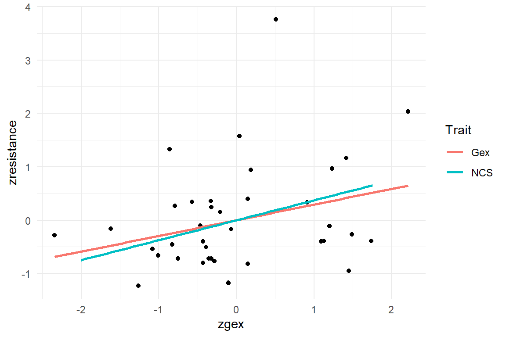
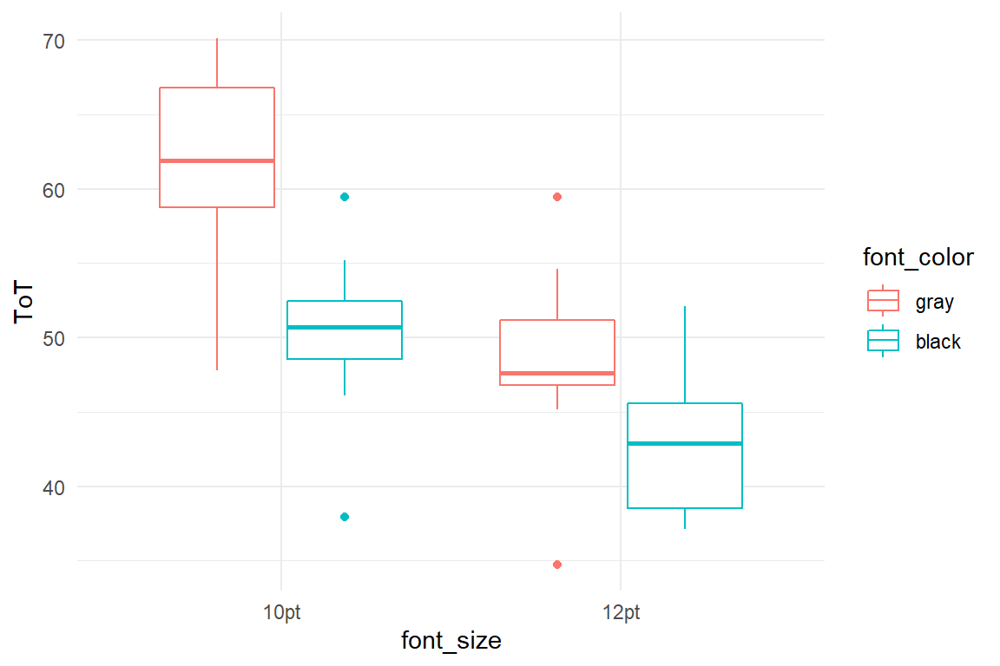

- I Preparations
- 1 Introduction
- 2 Getting started with R
- 2.1 Setting up the R environment
- 2.2 Learning R: a primer
- 2.2.1 Assigning and calling Objects
- 2.2.2 Vectors
- 2.2.3 Basic object types
- 2.2.4 Operators and functions
- 2.2.5 Storing data in data frames
- 2.2.6 Import, export and archiving
- 2.2.7 Case environments
- 2.2.8 Structuring data
- 2.2.9 Data transformation
- 2.2.10 Plotting data
- 2.2.11 Fitting regression models
- 2.2.12 Knitting statistical reports
- 2.3 Further reading
- 3 Elements of Bayesian statistics
- II Models
- 4 Basic Linear models
- 5 Multi-predictor models
- 6 Multilevel models
- 6.1 The Human Factor: Intercept random effects
- 6.2 Multi-level linear regression: variance in change
- 6.3 Thinking multi-level
- 6.4 Testing universality of theories
- 6.5 Non-human populations and cross-overs
- 6.6 Nested random effects
- 6.7 What are random effects? On pooling and shrinkage
- 6.8 Psychometrics and design-o-metric models
- 6.9 Further readings
- 7 Generalized Linear Models
- 8 Working with models
- Appendix
- A Cases
A Cases
This book comes with eight research cases with real data and eight simulated cases. They will be provided as R environments saved as Rda files. To use these environments, you have to download the Rda file and load it:
load("Cases/Uncanny.Rda")The loading puts the environment into your R session and you can see the content using the Environment tab in Rstudio. Or you issue the ls command:
ls(Uncanny)## [1] "D_UV"
## [2] "DK_1"
## [3] "Loo_beta"
## [4] "Loo_dist"
## [5] "Loo_poly_2"
## [6] "Loo_poly_3"
## [7] "M_dsgmx_1"
## [8] "M_poly_2"
## [9] "M_poly_3"
## [10] "M_poly_3_beta"
## [11] "M_poly_3_beta_dist"
## [12] "M_poly_3_ml"
## [13] "M_poly_9"
## [14] "P_poly_3"
## [15] "P_poly_3_ml"
## [16] "P_univ_uncanny"
## [17] "PP_poly_3_ml"
## [18] "PS_1"
## [19] "RK_1"
## [20] "RK_2"
## [21] "trough"
## [22] "trough.data.frame"
## [23] "trough.matrix"
## [24] "trough.numeric"
## [25] "UV_1"
## [26] "UV_dsgmx"In order to use the environment content in your R session, you have to attach it.
attach(Uncanny)Real data cases contain one or more data sets as data frames (tibbles), such as:
RK_1| Experiment | Obs | Part | Item | Scale | Stimulus | session | Session | Collection | Condition | presentation_time | response | RT | huMech | huMech0 | huMech1 | huMech2 | huMech3 |
|---|---|---|---|---|---|---|---|---|---|---|---|---|---|---|---|---|---|
| RK | 877 | p1_04 | nE5 | nEeriness | 74 | 0 | 1 | MR | 2 | Inf | -0.663 | 4.21 | 0.925 | 1 | 0.925 | 0.856 | 0.791 |
| RK | 1017 | p1_04 | nE1 | nEeriness | 71 | 1 | 2 | MR | 2 | Inf | -0.332 | 1.94 | 0.887 | 1 | 0.887 | 0.788 | 0.699 |
| RK | 1300 | p1_05 | nE4 | nEeriness | 18 | 1 | 2 | MR | 2 | Inf | -0.053 | 2.03 | 0.225 | 1 | 0.225 | 0.051 | 0.011 |
| RK | 1420 | p1_05 | nE4 | nEeriness | 61 | 2 | 3 | MR | 2 | Inf | -0.493 | 2.00 | 0.762 | 1 | 0.762 | 0.581 | 0.443 |
| RK | 2393 | p1_09 | nE1 | nEeriness | 45 | 0 | 1 | MR | 2 | Inf | -0.732 | 1.44 | 0.562 | 1 | 0.562 | 0.316 | 0.178 |
| RK | 3717 | p1_13 | nE5 | nEeriness | 77 | 2 | 3 | MR | 2 | Inf | -0.502 | 1.63 | 0.963 | 1 | 0.963 | 0.926 | 0.892 |
| RK | 3826 | p2_01 | nE2 | nEeriness | 30 | 0 | 1 | MR | 2 | Inf | -0.483 | 1.24 | 0.375 | 1 | 0.375 | 0.141 | 0.053 |
| RK | 6168 | p2_09 | nE8 | nEeriness | 57 | 1 | 2 | MR | 2 | Inf | -0.407 | 2.14 | 0.713 | 1 | 0.713 | 0.508 | 0.362 |
Before switching to a different case environment, it is recommended to detach the present environment:
Synthetic data cases contain a simulation function that precisely produces the data set as it has been used in this book. Sometimes, the simulation function also provides additional arguments to make changes to the data set.
load("Cases/AR_game.Rda")
attach(AR_game)The following simulates the AR_game data set, exactly as it was used in section [amplification].
simulate() %>%
ggplot(aes(x = technophile, color = sociophile, y = intention)) +
geom_point() +
geom_smooth()
All simulation functions provide the argument seed, which sets the random number generator(s) to a specific value. Using a different seed value produces a data set with the same structure, but different values.
simulate(seed = 1317) %>%
ggplot(aes(x = technophile, color = sociophile, y = intention)) +
geom_point() +
geom_smooth()
Additional arguments can be used to change the structure of the data set. In the present example, the amplification effect can be turned into a [saturation] effect, by changing the beta argument:
simulate(beta = c(-1, 1, .4, -3)) %>%
ggplot(aes(x = technophile, color = sociophile, y = intention)) +
geom_point() +
geom_smooth()
If you want to understand how a simulation function works and how it can be controlled, you can display the code of the function, just by calling it without parentheses:
simulate## function(N = 200,
## beta = c(-1, 1, .4, .6),
## sigma = .2,
## seed = 42)
## {
## set.seed(seed)
## out <-
## tibble(Part = 1:N,
## technophile = rbeta(N, 2, 3) * 2 - 1,
## sociophile = rbeta(N, 2, 2) * 2 - 1) %>%
## mutate( eta = beta[1] +
## beta[2] * technophile +
## beta[3] * sociophile +
## beta[4] * technophile * sociophile,
## intention = mascutils::inv_logit(rnorm(N, eta, sigma))) %>%
## as_tbl_obs()
## #
## # class(out) <- append(class(out), "sim_tbl")
## # attr(out, "coef") <- list(beta = beta,
## # sigma = sigma)
## # attr(out, "seed") <- seed
## #
## out
## }
## <bytecode: 0x000000007f2a8180>
## <environment: 0x00000000728cbee8>Real and synthetic case environments provide all data used in this book, but also all models are included that have been estimated. When working through this book, this saves you the effort to run the models by yourself.
M_cmrm## stan_glm
## family: gaussian [identity]
## formula: intention ~ 1 + sociophile + technophile + sociophile:technophile
## observations: 40
## predictors: 4
## ------
## Median MAD_SD
## (Intercept) 0.3 0.0
## sociophile 0.1 0.0
## technophile 0.2 0.0
## sociophile:technophile 0.2 0.0
##
## Auxiliary parameter(s):
## Median MAD_SD
## sigma 0.0 0.0
##
## ------
## * For help interpreting the printed output see ?print.stanreg
## * For info on the priors used see ?prior_summary.stanregA.1 Real cases
A.1.1 Hugme
As swift and enthusiastic most people are with words, the more clumsy and desinterested many are with computers. Today’s consumer computing devices are unmatched in usability and most people do not need to think harder than they like, when hunting for the best online prices, stream movies and enjoy their communications.
However, there is a minority of computer users, who call themselves the geeks. The hypothetical geek personality feels attracted to the inner workings of a computer system itself, rather than the applications and media entertainment it delivers. A geek person seeing a computer is more likely to have certain memories, for example, remembering how it was to build your first own computer, or the intellectual joy of learning a new programming language. If this personality type exists, we thought, then bringing up such thoughts should distract a geek in an experimental task, the Stroop task. This brief nostalgic would be measurable as a delayed response.
A.1.1.1 Measures
Before the experiment, participants filled out teh multi-item NCS and Geekism questionnaires. The geekism questionknaire was given a second time after the experiment, originally to assess test-retest reliability.
As response we had chosen recation time in a Stroop task, where participants were first primed by a picture shown before the Stroop task. These pictures were from two conditions: either showing computers in a geek-ish way (for example, an open case or programming code on the screen) or as regular product images. Furthermore, we presumed that geeks like to think hard and used the need-for-cognition scale as a second predictor. It was expected that participants with high NCS scores would recognize computers as a source of delightful hard thinking and hence have slower reaction times, when priming image and target word are both from the category Geek.
A.1.1.2 Stimuli
Stimuli were composed of a priming picture and the word presented in the Stroop task, with prime/word pairs generated randomly for each observation.
Ninety words were selected, 30 for each of the following three categories and translated into English, German and Dutch:
- hedonism (stylish, braging, wanting, …)
- utilitarianism (useful, assisting, optimizing)
- geekism (configuring, technology, exploring)
Seventy-two prime pictures were selected, with 24 for each of the following categories:
- control (pictures unrelated to technology)
- geek (pictures showing computers in a geekish setting, e.g. an open computer case or a terminal console)
A.1.1.3 Data modelling in a nutshell
The Hugme experiment is a multi-population study: participants, pictures, words and items (from two scales) all provide information that is relevant for the statistical model. For analyzing the relationship between geekism, NCS on te one hand and the difference in reaction times between word and picture categories, we need the table D_hugme, which provides the predictor data for every observation from the experiment. The way this table was constructed is an instructive example of how researchers can logically structure and efficiently transform data from complex studies.
The Table R_exp is the raw data that we got from the experiment. It contains the encounter of participants with primes and words, but misses the classification of words and primes, as well as participant-level variables. The classification of words and primes is stored separately in three entity tables: E_Words, E_Primes, whereas a E_part contains demographic data:
load("Cases/Hugme.Rda")
attach(Hugme)E_Part %>% sample_n(8)| Part | gender | age |
|---|---|---|
| 31 | female | 61 |
| 64 | female | 23 |
| 55 | female | 20 |
| 25 | female | 26 |
| 23 | male | 21 |
| 63 | male | 20 |
| 59 | male | 38 |
| 28 | male | 36 |
E_Words %>% sample_n(8)| Word | Word_DE | Word_NL | WordCat |
|---|---|---|---|
| wanting | wünschen | verlangen | hedo |
| assembling | einbauen | inbouwen | geek |
| usable | brauchbar | bruikbaar | util |
| useful | nützlich | nuttig | util |
| computing | berechnen | berekenen | util |
| manageable | handlich | handig | util |
| technology | Technologie | technologie | geek |
| cool | cool | cool | hedo |
E_Primes %>% sample_n(8)| Prime | PrimeCat |
|---|---|
| control03.jpg | control |
| neutral03.jpg | neutral |
| control11.jpg | control |
| control04.jpg | control |
| control24.jpg | control |
| neutral23.jpg | neutral |
| neutral13.jpg | neutral |
| neutral12.jpg | neutral |
All entity tables capture the information in the sample of precisely one population, with one row per member and a unique identifier. This identifier is called a key and is crucial for putting all the information together, using joins. Any response measure, like RT, is something that happens at every encounter. More abstractly, we could say, that this encounter is a relation between participants, words and primes, and the response is an attribute of the relation. R_exp is a relationship table which stores responses together with the encounter.
In fact, the encounters between Part, Word and Prime can be called a key, because the combination truly identifies every observation:
R_exp %>% as_tbl_obs()| Obs | Part | Word | Prime | correct | RT |
|---|---|---|---|---|---|
| 281 | 5 | skimping | geek08.jpg | TRUE | 0.696 |
| 659 | 11 | applying | geek09.jpg | TRUE | 0.540 |
| 923 | 15 | configuring | neutral18.jpg | TRUE | 0.544 |
| 1194 | 19 | envying | neutral06.jpg | TRUE | 0.655 |
| 1438 | 22 | admiring | neutral15.jpg | TRUE | 0.543 |
| 2122 | 32 | assembling | neutral17.jpg | TRUE | 0.567 |
| 2365 | 36 | pride | geek18.jpg | TRUE | 0.365 |
| 2609 | 53 | admiring | control06.jpg | TRUE | 0.751 |
cat(
"The number of unique encounters is",
nrow(distinct(R_exp, Part, Word, Prime))[1]
)## The number of unique encounters is 4027What is still missing in the table are all the variables that further describe or classify members of any of the three samples. Think of the püredictors you need for running group-means analysis or linear regression on the data. Table R_exp provides the scaffold and the other variables we can pull in from the entity tables by using join operations. A join always operates on two tables that share at least one key variable. The following code takes the R_exp the relationship table to the left and merges in additional data from the entity table, picking on the key variable. This works successively on the three entity tables:
R_exp %>%
left_join(E_Words, by = "Word") %>%
left_join(E_Primes, by = "Prime") %>%
left_join(E_Part, by = "Part") %>%
as_tbl_obs()| Obs | Part | Word | Prime | correct | RT | Word_DE | Word_NL | WordCat | PrimeCat | gender | age |
|---|---|---|---|---|---|---|---|---|---|---|---|
| 406 | 6 | wanting | neutral09.jpg | TRUE | 0.447 | wünschen | verlangen | hedo | neutral | male | 25 |
| 1040 | 16 | appearance | neutral09.jpg | TRUE | 0.856 | Aussehen | uiterlijk | hedo | neutral | male | 54 |
| 1096 | 16 | mastering | neutral24.jpg | TRUE | 0.575 | meistern | behappen | geek | neutral | male | 54 |
| 1115 | 17 | calculating | geek17.jpg | TRUE | 0.760 | kalkulieren | calculeren | util | geek | female | 24 |
| 1351 | 20 | serving | control08.jpg | TRUE | 0.824 | bedienen | besturen | util | control | female | 23 |
| 1399 | 21 | serving | control20.jpg | TRUE | 0.825 | bedienen | besturen | util | control | female | 22 |
| 1608 | 24 | rebuild | neutral15.jpg | TRUE | 0.420 | umbauen | wijzigen | geek | neutral | male | 22 |
| 3034 | 57 | improving | neutral02.jpg | TRUE | 0.666 | verbessern | opkrikken | geek | neutral | male | 24 |
Now you know how Entity Relationship Modelling works. This paradigm came up with the second generation of data base systems in the 1990s (The first generation used strictly hierarchical data structures) and has been fully adopted by the packages Dplyr and Tidyr from the Tidyverse.
A.1.2 CUE8
CUE8 is one of the long series Comparative Usability Evaluation studies conducted by Rolf Molich CUE8. Previous studies had shown that usability experts differ a lot in identification and reporting of usability problems. In CUE8, Molich and colleagues put the bar much lower and asked, whether different professional teams would obtain consistent measures of time-on-task. Eight independent Teams were given the same test scenario, consisting of five user tasks on a car rental website. Teams were otherwise free to design the test. In particular, some teams conducted remote usability tests, whereas others did standard moderated testing.
A.1.2.1 Measures
Time-on-task was measured in seconds and are also provided on a logarithmic scale, because of violation of Gaussian distribution of errors. In addition, satisfaction has been measured using the Systems Usability Scale with the range of \([0, 100]\).
load("Cases/CUE8.Rda")
attach(CUE8)
D_cue8| Obs | Team | Part | Condition | SUS | Task | ToT | logToT |
|---|---|---|---|---|---|---|---|
| 185 | C3 | 37 | moderated | 5 | 74 | 4.30 | |
| 213 | C3 | 43 | moderated | 3 | 64 | 4.16 | |
| 586 | H3 | 118 | remote | 95.0 | 1 | 88 | 4.48 |
| 980 | K3 | 196 | moderated | 67.5 | 5 | 76 | 4.33 |
| 1373 | L3 | 275 | remote | 35.0 | 3 | 90 | 4.50 |
| 1687 | L3 | 338 | remote | 78.0 | 2 | 186 | 5.23 |
| 2143 | L3 | 429 | remote | 100.0 | 3 | 48 | 3.87 |
| 2219 | L3 | 444 | remote | 43.0 | 4 | 188 | 5.24 |
A.1.3 Uncanny Valley
The Uncanny Valley effect is an astonishing emotional anomaly in the cognitive processing of artificial faces, like … robot faces. Intuitively, one would assume that people would always prefer faces that are more human-like. As it turns out, this is only up to a certain point, where increasing human-likeness causes a feeling of eerie.
For the first time, the UV effect could be rendered in an experiment by Mathur & Reichling. They measured the emotional response to pictures of robot faces using a simple rating scale (Likeability).
A.1.3.1 Experimental design
In order to pursue deeper into the UV effect, two more experiments, PS and RK, have been conducted in our lab. Both experiments have in common that participants see a sequence of robot faces and give an emotional response. Experiments DK and PS aimed at identifying the cognitive level of processing that makes the UV occur and collected the responses under manipulation of presentation time. The presentation times were 50, 100, 200 and 2000ms. Experiment RK kept the presentation time constant at 2000ms, but presented all stimuli three times. This was to collect enough data for verifying that the UV phenomenon is universal, i.e. occurs for every participant. All three experiments used a full within-subject design. However, every trial presented just one item from the Eeriness scale.
A.1.3.2 Stimuli
The stimuli in the experiments are pictures of robot faces that vary from totally not human-like (like the casing of a robotic vacuum cleaner) to almost indistinguishable from human. Mathur & Reichling collected and tagged the major part of the set of stimuli. The two studies, PS [PS] and RK [RK], successively added stimuli to the set in order to increase the precision in the range where the effect occurs.
The central predictor in these experiments is the human-likeness of a robot face. Mathur & Reichling produced these measures by use of a rating scale, humano-mechanical scale (huMech). Stimuli that were added by PS and RK were rated by two experts, using MR collection as a a baseline. Variable huMech has been normalized to \([0;1]\).
A.1.3.3 Measures
The Eeriness scale of Ho and MacDorman (2017) has been used to measure the emotional response. This scale contains eight items and has specifically been designed to observe the UV effect. The scale was implemented as a visual analog scale. Because the Eeriness scales direction is reverse to the original Likeability scale of Mathur and Reichling (2016) , responses have been reversed (negative Eeriness) and normalized to the interval \([-1; 0]\). In addition, reaction times have been recorded.
load("Cases/Uncanny.Rda")
attach(Uncanny)
Uncanny$RK_2 %>%
ggplot(aes(x = huMech, y = avg_like)) +
geom_smooth() +
geom_point()A.1.4 IPump
Medical infusion pumps are unsuspicious looking devices that are en-mass installed in surgery and intensive care. Their only purpose is controlled injection of medication in the blood stream of patients. Pumps are rather simple devices as infusion is not more than a function of volume and time. They are routinely used by trained staff, mostly anaesthesiologists and nurses. We should have great faith in safe operation under such conditions. The truth is, medical infusion pumps have reportedly killed dozens of people, thousands were harmed and an unknown number of nurses lost their jobs. The past generation of pumps is cursed with a chilling set of completely unnecessary design no-gos:
- tiny 3-row LCD displays
- flimsy foil buttons without haptic marking or feedback
- modes
- information hidden in menus
For fixing these issues no additional research is needed, as the problems are pretty obvious to experienced user interface designers. What needs to be done, though, is proper validation testing of existing and novel interfaces, for example:
- is the interface safe to use?
- is it efficient to learn?
- is a novel interface better than a legacy design? And by how much?
We conducted such a study. A novel interface was developed after an extensive study of user requirements and design guidelines. As even the newest international standards for medical devices do not spell precise quantitative user requirements (such as, a nurse must be able to complete a standard task in t seconds and no more than e errors may occur), the novel interface was compared to a device with a legacy design.
A.1.4.1 Experimental design
Eight successive user tasks were identified from training material and documentation. All participants were trained nurses and they were asked to complete the series of tasks with the devices. In order to capture learnability of the devices, every nurse completed the sequence of tasks in three consecutive sessions.
A.1.4.2 Measures
A number of performance measures were recorded to reflect safety and efficiency of operation:
- task completion: for every task it was assessed whether the nurse had completed it successfully.
- deviations from optimal path: using the device manual for every task the shortest sequence was identified that would successfully complete the task. The sequence was then broken down into individual operations that were compared to the observed sequence of operations. An algorithm called Levenshtein distance was used to count the number of deviations.
- time on task was recorded as a measure for efficiency.
- mental workload was recorded using a one-item rating scale.
Furthermore, several participant-level variables have been recorded:
- professional group: general or intensive care
- level of education (Dutch system): MBO, HBO and university
- years of job experience as a nurse
load("Cases/IPump.Rda")
attach(IPump)
IPump$D_agg %>%
ggplot(aes(x = Session, color = Design, y = ToT)) +
geom_boxplot()
A.1.5 Case Sleepstudy
This data set ships with the lme4 package and has only been converted to the coding standards used throughout. Eighteen participants underwent sleep deprivation on ten successive days and the average reaction time on a set of tests has been recorded per day and participant. For further information on the data set, consult the documentation (?lme4::sleepstudy). Variable names have been changed to fit the naming scheme of this book.
load("Cases/Sleepstudy.Rda")
attach(Sleepstudy)
D_slpstd %>%
ggplot(aes(x = days, y = RT)) +
facet_wrap(~Part) +
geom_point() +
geom_smooth(se = F, aes(color = "LOESS")) +
geom_smooth(se = F, method = "lm", aes(color = "lm")) +
labs(color = "Smoothing function")
A.1.6 Egan
in the beginning 1990ies Dennis Egan examined the variability in performance that is due to individual differences Egan. He concluded that individual differences are the greater source of performance variance than design differences are. Twenty-five years we put that to a test [test_Egan].
A.1.6.1 Research Design
We selected ten university websites and identified ten typical information search tasks. 41 student users took part and performed the tasks. Our design is a full within-subject design, with planned missing values. Instead of all 100 possible combinations of websites and tasks, every participant got a set of trials, where websites and tasks were paired, such that every website and every task appeared exactly once per participant.
A.1.6.2 Measures
Four usability measures were taken per trial:
- task success
- number of clicks (clicks)
- number of tims user returns to homepage
- workload (measured by a one-item scale)
load("Cases/Egan.Rda")
attach(Egan)
plot_Egan <- function(Level) {
level <- enquo(Level)
out <-
D_egan %>%
group_by(!!level) %>%
summarize(mean_ToT = mean(ToT)) %>%
ggplot(aes(x = mean_ToT)) +
geom_histogram() +
labs(title = quo(!!level)) +
xlim(0, 300)
}
grid.arrange(
plot_Egan(Part),
plot_Egan(Design),
plot_Egan(Task),
plot_Egan(Item)
)
A.1.7 Case: Millers Magic Number
Miller’s magic number says that the short term memory capacity is \(7 \pm 2\). Later research by Baddeley & Hitch found that the so-called working memory is a multi-component system, that stores visual and verbal information separately. Following up on the experimental research by [Freudenthal], we were interested how differences in capacity of the verbal and visual subsystem explain performance differences in a real web search tasks.
A.1.7.1 Research Design
We selected five municipal websites and five search tasks. For creating the trials, websites and tasks were paired in ush c way, that all participants see every website and every task exactly once.
A.1.7.2 Measures
For visual working memory capacity, we used the Corsi block tapping task. For verbal capacity, the Ospan task was used and both scoring schemes, A and B, were applied. Number of clicks and time to completion were recorded as performance measures.
load("Cases/MMN.Rda")
attach(MMN)
MMN_2 %>%
ggplot(aes(x = Ospan.A, y = time)) +
geom_point() +
geom_smooth()
MMN_2 %>%
ggplot(aes(x = as.factor(Corsi), y = time)) +
geom_boxplot()
A.1.8 AUP
In their seminal article, [Carroll & Rosson] coin the term Active User Paradox for their observations, that users stick to their habits and are reluctant to put energy into learning a computer system. This seems irrational at first, as users miss a chance to increase their long-term efficiency. (Later research by [Fu & Gray] found that their is a hidden rationality to the AUP.) Still, there are users out there who are enthusiastic about computers and love to solve the intellectual puzzles they provide. We wanted to see whether people of that kind would be more likely to over-win the AUP.
A.1.8.1 Measures
For measuring the personality of users, we used
- the need-for-cognition scale
- the Geekism (gex) scale.
- a scale for Computer Anxiety Scale
- a scale for Utilitarianism
Users were given two complex tasks on a computer. Their behavour was observed and events were coded, e.g. “User uses documentation of the system.” Events were than rated, counted and aggregated into two scales:
- seeking challenges
- explorative behaviour
By combining these two scales, we created a total score for resistance to the AUP, per participant.
load("Cases/AUP.Rda")
attach(AUP)
AUP_1 %>%
ggplot(aes(x = zgex, y = zresistance)) +
geom_point() +
geom_smooth(aes(color = "Gex"), method = "lm", se = F) +
geom_smooth(aes(x = zncs, color = "NCS"), method = "lm", se = F) +
labs(color = "Trait")
A.2 Synthetic data sets
A.2.1 Rainfall
We don’t want to get wet, which is why we use the weather forecast. If we want to make our own forecasts, we need data. This simulation records rainfall on 20 days. On around 60% of these days, the sky was cloudy in the morning. With a blue sky in the morning, the chance of rain is 30%. On cloudy days it is 60%.
## simulating the data set
Rainfall$simulate <-
function(
n_Days = 20,
set.seed = 1,
debug = F) {
if (!is.na(set.seed)) set.seed()
## number of observations
tibble(cloudy = rbinom(n_Days, 1, .6)) %>%
mutate(rain = rbinom(20, 1, 0.3 + cloudy * 0.3)) %>%
mutate(
cloudy = as.logical(cloudy),
rain = as.logical(rain)
) %>%
as_tbl_obs()
}A.2.2 99 seconds
The maerketing department of a car rental website claims that “You can rent a car in 99 seconds.” In this simulation, time-on-task measures are taken from 100 test users. These are Gaussian distributed with a mean of 105 and a standard error of 42. ToT also correlates with age, while there is no gender difference.
## simulating the data set
Sec99$simulate <-
function(n_Part = 100,
mu_ToT = 105,
sigma_ToT = 30,
set.seed = 42,
debug = F) {
if (!is.na(set.seed)) set.seed(set.seed)
## number of observations
n_Obs <- n_Part
## OUT
Sec99 <- tibble(
Obs = 1:n_Part,
Part = 1:n_Part,
ToT = rnorm(n_Obs, mu_ToT, sigma_ToT)
) %>%
## dirty hack to create correlated age
mutate(age = rpois(n_Part, rnorm(n_Part, 30 + ToT / 8, 2))) %>%
mutate(Gender = if_else(rbinom(n_Part, 1, .4) == 1,
"male", "female"
))
Sec99 %>% as_tbl_obs()
}
## missing values in age
Sec99$Ver20$age[c(6, 19, 73)] <- NAload("Cases/Sec99.Rda")
attach(Sec99)
Ver20 %>%
ggplot(aes(x = age, y = ToT)) +
geom_point()
A.2.3 Rational
A project needs a predicted increase in revenue by a factor of 1.1 for management to give green light. The simulation produces a between-subject comparison study, where 50 users each see the current version of the website or the prototype. Revenue in both groups is Gamma distributed with a mean of 100 for the current version and a multiplyer of 1.1 for the prototype.
## simulating the data set
Rational$simulate <-
function(n_Part = 100,
mu_legacy = 50,
eta_proto = 1.1,
scale = 2,
set.seed = 1,
debug = F) {
if (!is.na(set.seed)) set.seed(set.seed)
RD <-
tibble(
Part = 1:n_Part,
Design = rep(c("current", "proto"), n_Part / 2),
mu = mu_legacy * ifelse(Design == "proto", eta_proto, 1),
shape = mu / scale,
scale = scale,
Euro = rgamma(n_Part, shape = shape, scale = scale)
) %>%
as_tbl_obs()
RD
}A.2.4 BrowsingAB
## simulating the data set
BrowsingAB$simulate <-
function(
n_Part = 100,
n_Task = 5,
## within-subject design is default
within_Part = T,
## Fixed effects
# intercept
beta_S0 = 120,
# male
beta_S1 = 2,
# edu low
beta_S2_1 = 20,
# edu middle
beta_S2_2 = 5,
# age
beta_S3 = .1,
# age:edu low
beta_S4_1 = .3,
# age:edu middle
beta_S4_2 = 0,
# age:designB
beta_S5 = .4,
# designB
beta_D1 = -60,
## Random effects
# subject intercept
sd_S0 = 20,
# subject slope design
sd_S1 = 10,
# task intercept
sd_T0 = 50,
# Far_sightedness:Small_font
lambda_SD1 = 60,
# Residual
sd_epsilon = 30,
set.seed = 42,
debug = F) {
n_Design <- 2
if (!is.na(set.seed)) set.seed(set.seed)
## number of observations
n_Obs <- n_Part * n_Design * n_Task
## Subject frame
Part <- tibble(
Part = as.factor(1:n_Part),
Gender = sample(c("F", "M"),
size = n_Part, replace = T
),
Education = sample(c("Low", "Middle", "High"),
size = n_Part, replace = T
),
theta_S0 = rnorm(n_Part, 0, sd_S0),
theta_S1 = rnorm(n_Part, 0, sd_S1),
age = as.integer(runif(n_Part, 20, 80))
) %>%
# LVs
# probability of far sightedness increases with age
mutate(
p_Far_sighted = age / 150
# p_Far_sighted = plogis(mu_Far_sighted)
) %>%
mutate(Far_sighted = as.logical(rbinom(n_Part, 1, p_Far_sighted)))
Task <-
tibble(
Task = as.factor(1:n_Task),
theta_T0 = rnorm(n_Task, 0, sd_T0)
)
Design <-
tibble(Design = factor(c("A", "B"))) %>% ## LVs
mutate(Small_font = (Design == "B"))
BrowsingAB <-
## creating a complete design
expand_grid(
Part = levels(Part$Part),
Task = levels(Task$Task),
Design = levels(Design$Design)
) %>%
## joining in the sample tables
inner_join(Part) %>%
inner_join(Design) %>%
inner_join(Task) %>%
## latent variables
# small font at website B
mutate(lambda_SD1 * Small_font * Far_sighted) %>%
## dependent variable
mutate(
mu = beta_S0 +
(Gender == "male") * beta_S1 +
(Education == "Low") * beta_S2_1 +
(Education == "Middle") * beta_S2_1 +
age * beta_S3 +
age * (Education == "Low") * beta_S4_1 +
age * (Education == "Middle") * beta_S4_2 +
age * (Design == "B") * beta_S5 +
(Design == "B") * beta_D1 +
theta_S0 +
theta_S1 * (Design == "A") +
theta_T0 +
lambda_SD1 * Far_sighted * Small_font
) %>%
mutate(
ToT = rnorm(n_Obs, mu, sd_epsilon),
clicks = rpois(n_Obs, mu / 20),
returns = rpois(n_Obs, mu / 80),
rating = ceiling(inv_logit((mu - 150) / 50) * 7)
) %>%
select(
Part, Task, Design,
Gender, Education, age, Far_sighted, Small_font,
ToT, clicks, returns, rating
) %>%
as_tbl_obs()
}A.2.5 Headache
This simulation takes perceived headache measured on 16 participants before and after an administration of headache pills. Participants either get both pills A and B, only A, only B or no pill (placebo). Pill A and B are both effective on their own, but there is a saturation effect, when both pills are taken. Baseline headache is generated from Beta distributions. In order to avoid unplausible (i.e. negative) values, reduction in headache involves a log transformation.
Headache$simulate <-
function(N = 16,
seed = 42) {
set.seed(seed)
tibble(
before = round(rbeta(N, 3, 2) * 4 + 3),
PillA = rep(c(TRUE, FALSE), N / 2),
PillB = c(rep(TRUE, N / 2), rep(FALSE, N / 2))
) %>%
mutate(reduction = rnorm(
N,
before / 7 * log(2 + 8 * PillA + 6 * PillB),
0.5
)) %>%
mutate(
PillA = as.factor(PillA),
PillB = as.factor(PillB)
) %>%
as_tbl_obs()
}load("Cases/Headache.Rda")
attach(Headache)
simulate() %>%
ggplot(aes(x = PillA, color = PillB, y = reduction)) +
geom_boxplot()
A.2.6 Reading time
This simulation covers an experiment where participants got to read a text on screen and their reading time is recorded. 40 participants are divided over four experimental conditions, where the font size is either 10pt or 12pt and where the font color is either black (high contrast) or gray. Small and gray font results in an average reading time of 60 seconds. 12pt is read 12s faster and black font is read 10s faster. Due to a saturation effect, 12pt and black combined do not result in 22s, but only 14s. Reading time (ToT) is generated with Gaussian distribution.
Reading$simulate <-
function(N = 40,
beta = c(
Intercpt = 60,
fnt_size_12 = -12,
fnt_color_blk = -10,
ia_blk_12 = 8
),
sigma = 5,
seed = 42) {
set.seed(seed)
out <-
tibble(
Part = 1:N,
font_size = factor(rep(c(1, 2), N / 2),
levels = c(1, 2),
labels = c("10pt", "12pt")
),
font_color = factor(c(rep(1, N / 2), rep(2, N / 2)),
levels = c(1, 2),
labels = c("gray", "black")
)
) %>%
mutate(
mu = beta[1] +
beta[2] * (font_size == "12pt") +
beta[3] * (font_color == "black") +
beta[4] * (font_color == "black") * (font_size == "12pt"),
ToT = rnorm(N, mu, sigma)
) %>%
as_tbl_obs()
out
}load("Cases/Reading.Rda")
attach(Reading)
simulate() %>%
ggplot(aes(
col = font_color,
x = font_size,
y = ToT
)) +
geom_boxplot()
A.2.7 AR_game
A company seeks their customer profile for a novel Augmented Reality game. 200 participants rate how technophile or sociophile they are (generated from Beta distributions) and rate their intention to buy the product. The coefficients are set to create a slight benefit (for intention) of being sociophile or technophile and an amplification effect for participants that are both. Intention is sampled from a Gaussian distribution, but with an inverse logit transformation to create boundaries at \([0;1]\).
AR_game$simulate <-
function(N = 200,
beta = c(-1, 1, .4, .6),
sigma = .2,
seed = 42) {
set.seed(seed)
out <-
tibble(
Part = 1:N,
technophile = rbeta(N, 2, 3) * 2 - 1,
sociophile = rbeta(N, 2, 2) * 2 - 1
) %>%
mutate(
eta = beta[1] +
beta[2] * technophile +
beta[3] * sociophile +
beta[4] * technophile * sociophile,
intention = mascutils::inv_logit(rnorm(N, eta, sigma))
) %>%
as_tbl_obs()
# class(out) <- append(class(out), "sim_tbl")
attr(out, "coef") <- list(
beta = beta,
sigma = sigma
)
attr(out, "seed") <- seed
out %>% as_tbl_obs()
}load("Cases/AR_game.Rda")
attach(AR_game)
simulate() %>%
mutate(
technophile_grp = technophile > median(technophile),
sociophile_grp = sociophile > median(sociophile)
) %>%
ggplot(aes(
x = sociophile_grp,
color = technophile_grp,
y = intention
)) +
geom_boxplot()
A.2.8 Sleep
This simulation is loosely modelled after an experiment Corcoran [%D. W. J. Corcoran (1962) Noise and loss of sleep, Quarterly Journal of Experimental Psychology, 14:3, 178-182, DOI: 10.1080/17470216208416533] who measured the combined effects of sleep deprivation and noisy environments. It turned out that noise and sleep deprivation both increase reaction times, but that noise helps when someone is very tired. Outcomes were simulated from Gaussian distributions.
Sleep$simulate <-
function(N = 40,
beta = c(
Intcpt = 70,
noisy = 8,
deprived = 200,
n_d = -100
),
sigma = 50,
seed = 42) {
set.seed(seed)
expand.grid(
.N = 1:(N / 4),
Environment = as.factor(c("Calm", "Noisy")),
Sleep = as.factor(c("Rested", "Sleepy"))
) %>%
select(-.N) %>%
mutate(
Part = 1:N,
mu = beta[1] +
beta[2] * (Environment == "Noisy") +
beta[3] * (Sleep == "Sleepy") +
beta[4] * (Environment == "Noisy") * (Sleep == "Sleepy"),
RT = rnorm(N, mu, sigma)
) %>%
mutate(RT = ifelse(RT > 0, RT, NA)) %>%
select(3, 1, 2, 4, 5) %>%
as_tbl_obs()
}
S <- simulate()These results can be explained by the Yerkes-Dodson law, which states that performance on cognitive tasks is best under moderate arousal. It is assumed that arousal increases energy, but also causes loss of focus. These two counter-acting forces reach an optimal point somewhere in between. The two lines Energy and Focus have been produced by a logistic function, whereas Performance is the product of the two.
load("Cases/Sleep.Rda")
attach(Sleep)
simulate() %>%
ggplot(aes(
x = Environment,
color = Sleep,
y = RT
)) +
geom_boxplot()